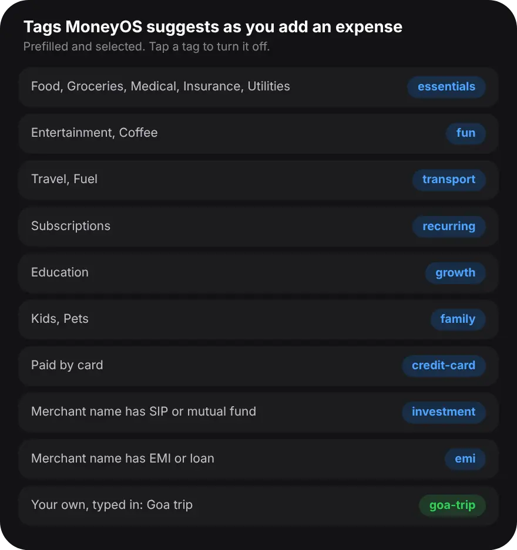

Why use tags when you already have categories?
Because each expense has only one category, but it can have many tags, so a tag can follow one purpose across every category it touches.
A category answers what the money was for at the till. That is useful for limits, such as a monthly cap on food. But some questions cut across categories. What did the Goa trip cost in total? How much went on the new flat, between furniture, paint and the plumber? Which expenses do I claim back from work? With only categories, those answers are scattered. With a tag on each row, they line up in one list.
How do I tag expenses and filter by a tag?
Add a tag under Tags when you log an expense, then on Home pick that tag in the Transactions filter. Five steps:
- Open Add. Tap the plus button and enter the amount and merchant as usual.
- Check the suggested tags. Under Tags, MoneyOS has already selected a few tags from the category, the merchant and the payment mode. Tap any you do not want to turn it off.
- Add your own tag. Type a name such as Goa trip in Add a tag and tap Add. It is saved as goa-trip, so the same name always matches.
- Filter Home by the tag. On Home, in the Transactions card, open the Tag filter and pick your tag. Only tagged rows stay in the list.
- Switch to Categories. Tap Categories to see how much of that tag went to each category, with its share. Tap All to see the rows day by day.
The tag filter lists the tags used in the month you are looking at. To tag something you already logged, tap the row, edit it and add the tag under Tags. Each row shows up to three of its tags in the list.
Which tags does MoneyOS suggest?
A small fixed set, picked from the category, the merchant name and the payment mode. They are selected by default, and you can turn any off.

The suggestions come from simple rules, not from AI, so they never change between one day and the next. If you turn a suggestion off, it stays off for that entry even when you change the category. Some well-known merchants also carry tags of their own, which are added when you type their name. One tag changes how a row counts: an expense tagged investment is treated as money set aside, not spent, and shows under Investments & Savings instead of in your spending. Read more on why a SIP is not spending.
Can I filter by payment mode or card too?
Yes. Next to the tag filter are Card, Category and Payment, and you can combine them.
Payment narrows the list to Cash, UPI or Card, or to Unspecified for rows logged without a payment mode. Card narrows it to one of your saved cards. Combine filters to answer sharper questions, such as how much of this month's food went on the card, or how much of the trip was paid in cash. In the All view, each day's heading shows that day's spending for the rows that match. For more on cards, see tracking spending on each credit card.
What are good tags to start with?
Tags for events with an end, people you spend for, and money you expect back.
A trip or festival, such as goa-trip or diwali, shows what the whole event cost. A person, such as mom or kids-school, shows what you spend on someone across categories. A work-claim or reimburse tag lists everything you are owed, ready to total. Keep tags short and few, and reuse the same name each time. Tags also travel with your data: they are in the Tags column when you export to Excel or Google Sheets.
Frequently asked questions
What is the difference between a category and a tag?
Each expense has one category, such as Food or Travel. It can have several tags, so one tag can cover rows from many categories, like everything spent on a trip.
Does MoneyOS add tags automatically?
It suggests them. As you add an expense, tags such as essentials, fun, transport or credit-card are prefilled from the category, merchant and payment mode. They are selected, and you can turn any of them off.
How do I see all expenses with one tag?
On Home, in the Transactions card, open the tag filter and pick the tag. Switch to Categories to see each category's total for that tag.
Can I filter by UPI, card or cash?
Yes. The Payment filter shows only Cash, UPI or Card rows, or Unspecified for rows with no payment mode.
Can I add a tag to an expense I already logged?
Yes. Tap the transaction to edit it, then add or remove tags under Tags. Tags apply to expenses and transfers, not to income.
Is MoneyOS free?
Yes. The whole app is free, with no subscription, no ads and no in-app purchases.